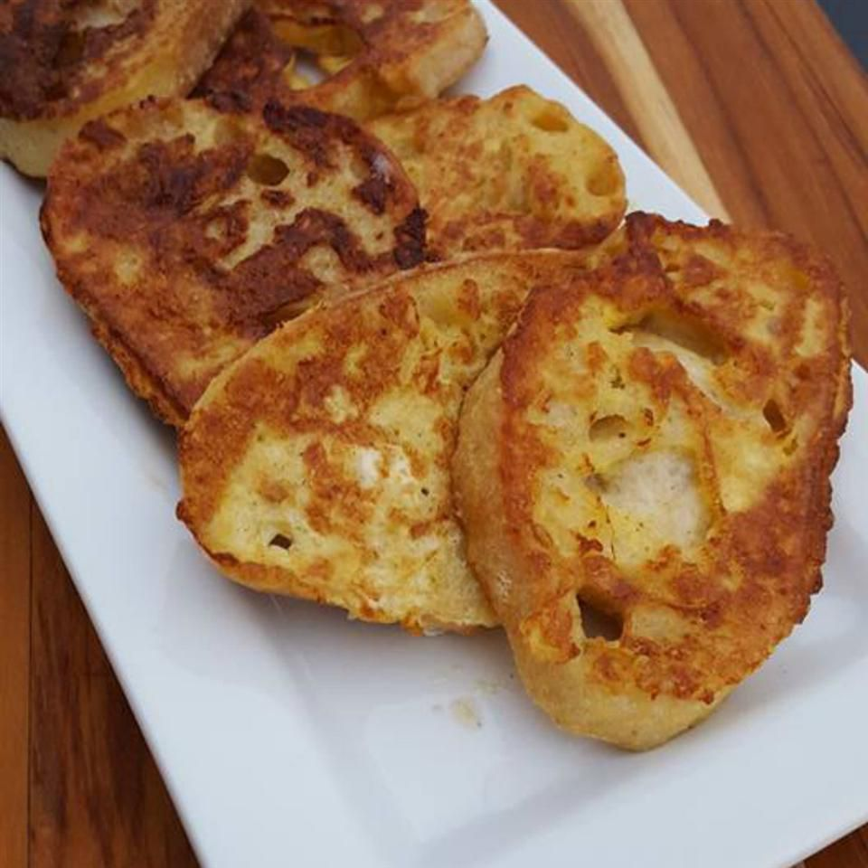

Savoury French Fino

Description
Basically, it's savory french toast, but without toast because it's not always available for me, so instead I'll be
using fino bread.
Ingredients
- Eggs
- Fino bread
- Shredded Turki cheese
- Shredded mozzarella cheese
- Baramili Cheese
- Milk
- green olives
- Salt
- Pepper
- Butter or ghee
Steps
- Cut the fino bread into slices so that you'll end up with circles.
- Crack the eggs in a bowl, add milk, salt, and pepper. Mix well.
- Heat the pan and add butter or ghee.
- Dip the bread slices in the egg mixture.
- Place the bread slices in the pan and cook until golden brown.
- Flip the bread slices and cook the other side until golden brown.
- While still in the pan, spread the Baramili Cheese ont o the slices, then sprinkle the mozzarella and turki cheeses, and green olives on top of the bread slices.
- Cover the pan and let the cheese melt.
- Once the cheese has melted, remove the bread slices from the pan and serve!
Best enjoyed with a cup of milk or chocolate milk!